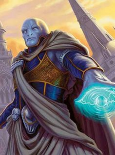

Kultführer
Charonoth (auch der Auserwählte oder der Messias), ein Vedalken-Zauberer und Meister der Nekromantie, gründete den Kult Die Erben der neuen Welt in den verborgenen Tiefen von Orderly. Er glaubt, dass er dazu bestimmt ist, ein neuer Gott zu werden, der die alte Ordnung stürzt und eine neue Ära der Freiheit einleitet. Unter seiner Führung führt der Kult düstere Rituale durch und sammelt Macht, um seine ehrgeizigen Ziele zu erreichen. In ständiger Opposition zur Kirche der Ordnung sucht Charonoth nach Verbündeten, um seine Vision einer neuen Welt zu verwirklichen.
Backstory
Einstieg in die Magie: Charonoth wurde in der Stadt Orderly geboren. Schon in jungen Jahren war er fasziniert von der präzisen Architektur und der symmetrischen Anordnung der Stadt. Als Vedalken zeichnete er sich durch eine analytische Denkweise und eine unstillbare Neugierde aus, die ihn von seinen Mitbürgern unterschied. Von klein auf wurde Charonoth in den strengen Lehren und Ritualen der Kirche der Ordnung unterrichtet. Doch anders als viele seiner Altersgenossen zeigte er kein Interesse daran, sich den vorgegebenen Pfaden und Traditionen zu unterwerfen. Stattdessen war er von einem unbändigen Drang nach Wissen und Macht getrieben.
Die Entdeckung der Nekromantie: In den streng überwachten Bibliotheken von Orderly stieß Charonoth auf verbotene Texte über Nekromantie. Diese dunklen Künste boten ihm eine Möglichkeit, die Grenzen des Lebens und des Todes zu erforschen, weit jenseits der akzeptierten Praktiken der Kirche der Ordnung. Fasziniert von diesen verbotenen Lehren, begann Charonoth, sich heimlich der Nekromantie zu widmen, stets wachsam gegenüber den Inquisitoren der Kirche.
Gründung der Erben der neuen Welt: Desillusioniert von den Versäumnissen der alten Götter und der rigiden Kontrolle der Kirche der Ordnung, entschloss sich Charonoth, seinen eigenen Weg zu gehen. Er gründete den Kult Die Erben der neuen Welt in den verborgenen Tiefen von Orderly, tief unter der Stadt in einem Netzwerk geheimer Tunnel und Kammern. Diese Kultstätte war ein Zufluchtsort für jene, die seine Vision einer neuen göttlichen Ordnung teilten.
Klasse und Rasse
Klasse: Zauberer (Wizard)
Unterklasse: Schule der Nekromantie (School of Necromancy)
Rasse: Vedalken
Background: Acolyte
Alter: 120 (Vedalken werden 350 Jahre - 500 Jahre alt.)
Alignment: Chaotic Evil
Größe: ca. 195 cm
Vedalken Dispassion: You have advantage on all Intelligence, Wisdom, and Charisma saving throws.
Proficiencies: History (Tireless Precision), Forgery Kit (Tireless Precision), Insight (Acolyte), Religion (Acolyte), Arcana (Wizard), Medicine (Wizard)
Partially Amphibious: By absorbing oxygen through your skin, you can breathe underwater for up to 1 hour. Once you've reached that limit, you can't use this trait again until you finish a long rest.
Sprachen: Common, Vedalken und Celestial (Vedalken Bonus), Abyssal (Acolyte Bonus), Infernal (Acolyte Bonus)
Attributsverteilung
- STR: 8 (8 +0)
- DEX: 14 (14+0)
- CON: 10 (10+0)
- INT: 17 (15+2)
- WIS: 11 (10+1)
- CHA: 14 (14+0)
Fähigkeiten und Talente
Zauber (Spells):
Zaubertricks (Cantrips):
Ausrüstung
- Magierrobe
- Stab
- Zauberbuch
- Dunkle Robe